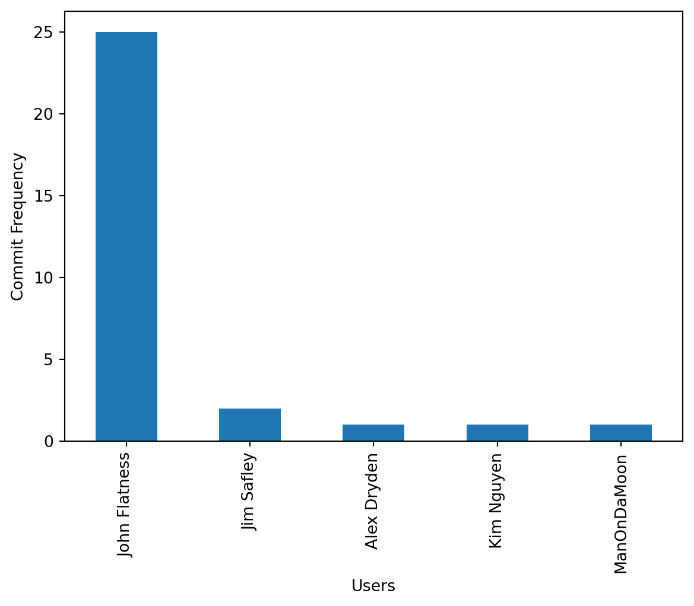

import requests
import json
import pandas as pd
url = "https://api.github.com/repos/omeka/omeka-s/commits?page=1"
resp = requests.get(url)
json_list = json.loads(resp.text)Downloading Github Commits
visualisation
code
api
Code repository commits are informative.
The code for much of the software I use lives on Github. People are continually editing and uploading contributions to the different projects. I think we could learn a lot about a community from looking at who commits and what they commit to.
The GitHub api makes it easy to download commits with their API. A list of JSON objects can be downloaded using their API. The format for the API is
https://api.github.com/repos/{user/organisation}/{repo}/commits?pages={page_number}
so we can see the most recent commits to the Omeka S project by going to the page below.
https://api.github.com/repos/omeka/omeka-s/commits?page=1
To download the page in Python we use our old friends requests and json to parse the page.
For this toy example, it’s easier to go through the json list and pick out the author and date.
def filter_json(data: json) -> dict:
out = data["commit"]["author"]
return out
result = []
for json_item in json_list:
result.append(
filter_json(json_item)
)
df = pd.DataFrame(result)Who has made the most commits looking at only the most recent 30 commits?
pd.pivot_table(
df,
index = 'name',
values = 'date',
aggfunc='count'
)| date | |
|---|---|
| name | |
| Alex Dryden | 1 |
| Jim Safley | 2 |
| John Flatness | 25 |
| Kim Nguyen | 1 |
| ManOnDaMoon | 1 |
As a plot (as if we need it…)
from matplotlib import pyplot as plt
fig, ax = plt.subplots()
df['name'].value_counts().plot(
ax=ax,
kind='bar',
xlabel='Users',
ylabel='Commit Frequency'
)<AxesSubplot:xlabel='Users', ylabel='Commit Frequency'>
John Flatness is clearly leading. Though there are lots of caveats:
- Does this hold true across the project history?
- Are the commits all the same size? If not, then how do we weight commits of different size?
etc.
Though it is a start.